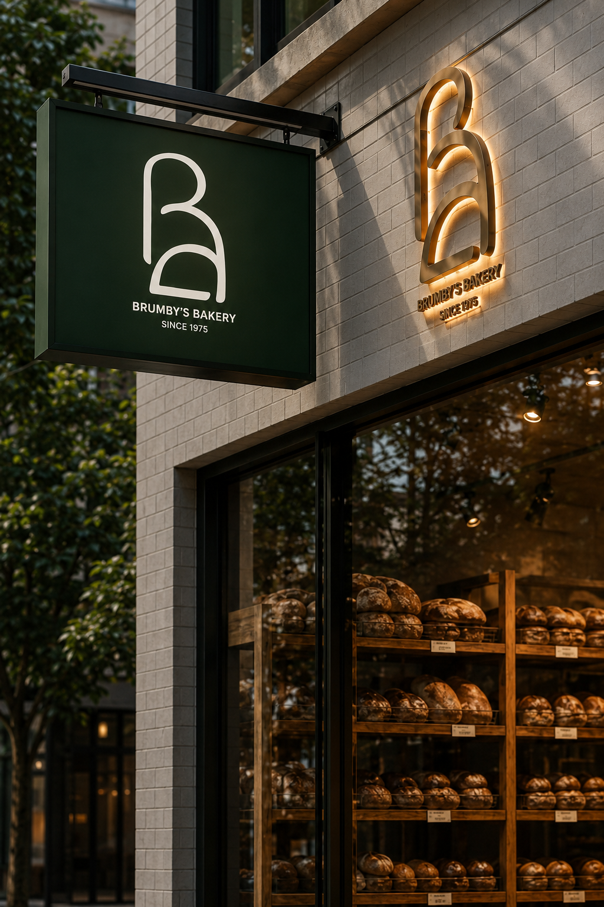
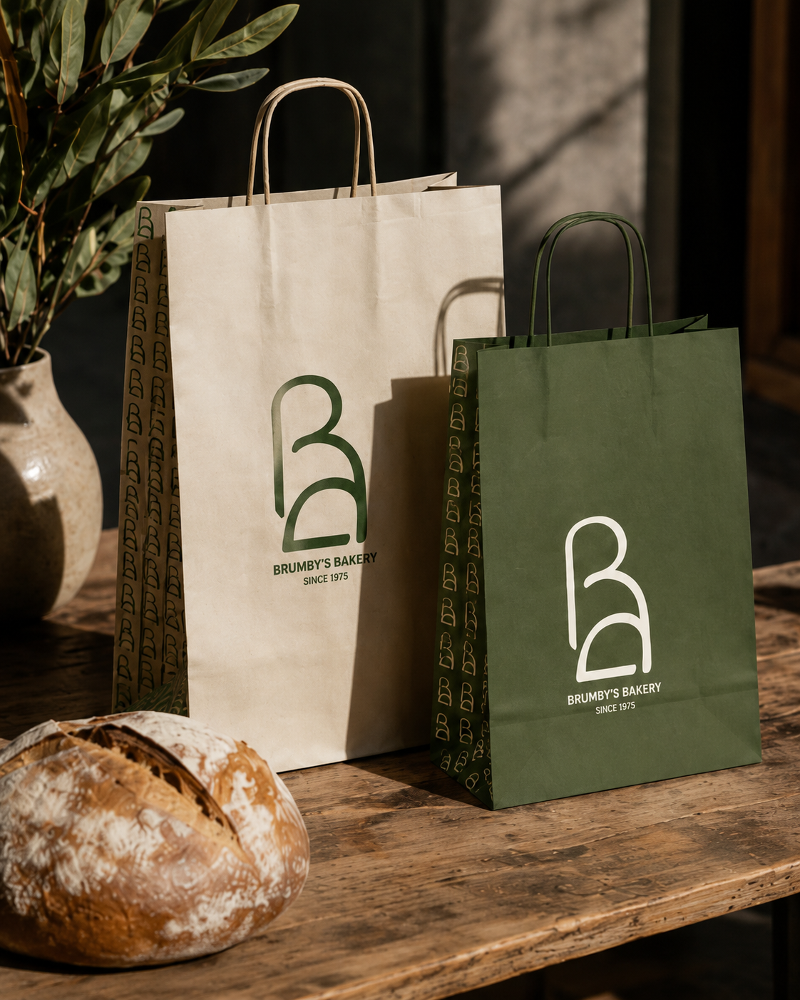
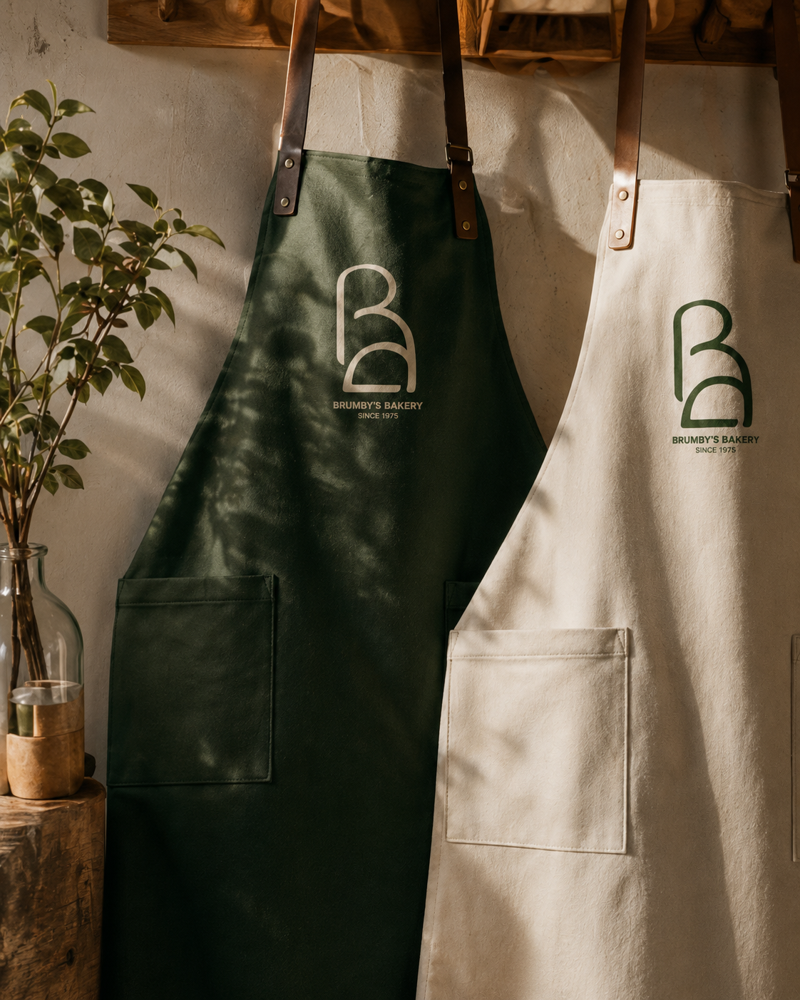
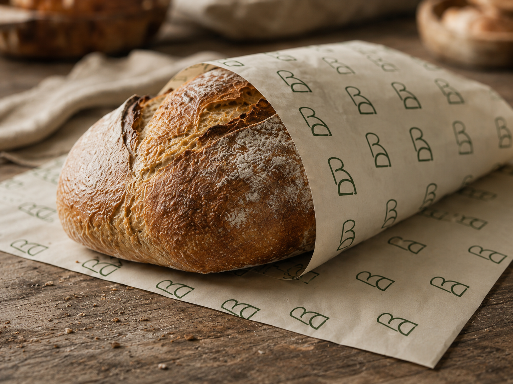

Brumbys Bakery
A brand redesign exploring two distinct creative directions for an established Australian bakery. Identity, uniforms, product wraps and storefront signage applied across a monogram route and a spiral route, each carrying its own personality while sitting within the same family.




- Brand Redesign
- Identity
- Packaging Design
- Environmental Design
- Two complete identity routes
- Paper bags and aprons
- Cream and green bread wraps
- Storefront signage
2024
Reimagine the visual language for a heritage bakery without losing its everyday familiarity. Present two distinct creative routes side by side for stakeholder review.
A monogram route leans into a single-letter mark with a leaf detail, quiet and architectural. A spiral route reads as a continuous wheat-inspired form, warmer and more handcrafted. Both palettes lead with a deep botanical green so the family reads as one brand.
Two fully applied brand directions across packaging, uniforms and signage, ready to be tested against the existing brand and compared as creative options.